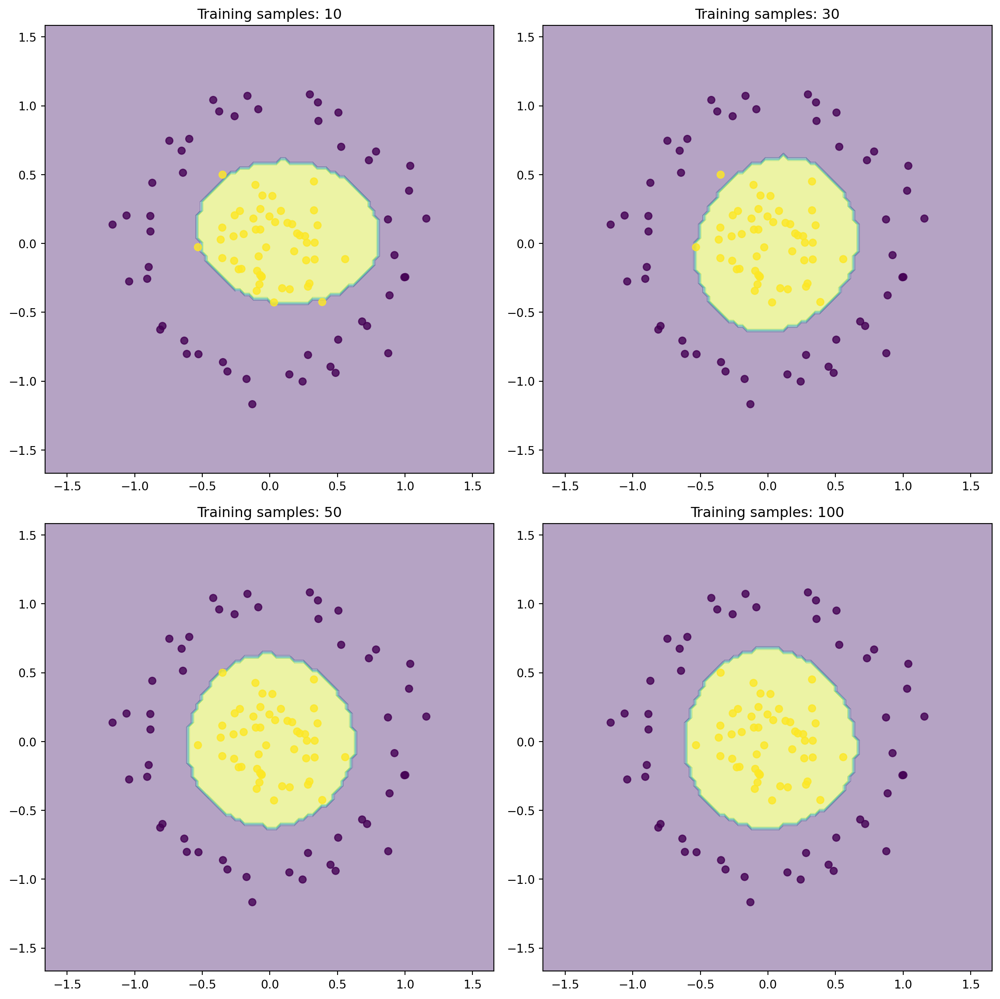
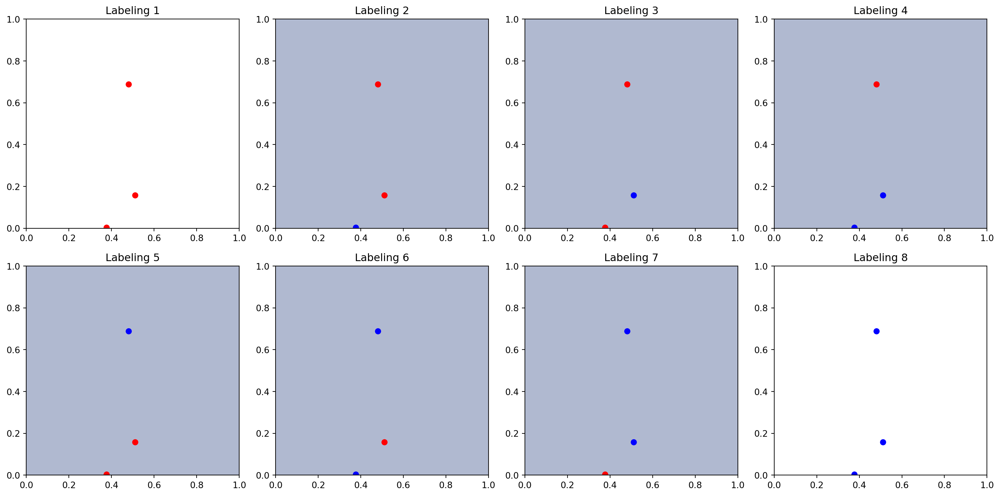

A beginner-friendly guide to PAC learning theory and VC dimension with interactive visualizations and practical examples.
machine-learning
theory
mathematics
statistics
Author
Ram Polisetti
Published
March 19, 2024
PAC Learning Theory and VC Dimension
Learning Objectives
By the end of this article, you will: 1. Understand PAC learning intuitively and mathematically 2. Visualize VC dimension in practice 3. Calculate sample complexity for real problems 4. Implement PAC learning algorithms 5. Apply VC theory to model selection
Introduction
Imagine you’re teaching a robot to recognize apples . How can you be “probably approximately correct” about its ability to recognize any apple? PAC learning theory gives us the mathematical framework to answer such questions.
Code
import numpy as npimport matplotlib.pyplot as pltimport seaborn as snsfrom sklearn.svm import SVCfrom sklearn.datasets import make_classification, make_circlesfrom sklearn.model_selection import learning_curveimport time# Set random seed for reproducibilitynp.random.seed(42)
1. PAC Learning Visualization
Let’s visualize what “probably approximately correct” means:
def visualize_pac_learning(n_samples=100, noise_level=0.1):# Generate synthetic dataset X, y = make_circles(n_samples=n_samples, noise=noise_level, factor=0.3)# Train models with different sample sizes sample_sizes = [10, 30, 50, n_samples] fig, axes = plt.subplots(2, 2, figsize=(12, 12)) axes = axes.ravel()for i, size inenumerate(sample_sizes):# Train model on subset model = SVC(kernel='rbf') idx = np.random.choice(n_samples, size=size, replace=False) model.fit(X[idx], y[idx])# Create grid for decision boundary xx, yy = np.meshgrid(np.linspace(X[:, 0].min()-0.5, X[:, 0].max()+0.5, 100), np.linspace(X[:, 1].min()-0.5, X[:, 1].max()+0.5, 100)) Z = model.predict(np.c_[xx.ravel(), yy.ravel()]) Z = Z.reshape(xx.shape)# Plot axes[i].contourf(xx, yy, Z, alpha=0.4) axes[i].scatter(X[:, 0], X[:, 1], c=y, alpha=0.8) axes[i].set_title(f'Training samples: {size}') plt.tight_layout() plt.show()visualize_pac_learning()

Key Insight
Notice how the decision boundary becomes more stable and accurate as we increase the sample size. This is PAC learning in action!
2. VC Dimension Explorer
Let’s create an interactive tool to explore VC dimension:
def explore_vc_dimension(n_points=100):def generate_points(n):return np.random.rand(n, 2)def plot_linear_classifier(ax, points, labels):iflen(points) >=2: model = SVC(kernel='linear')try: model.fit(points, labels)# Plot decision boundary xx, yy = np.meshgrid(np.linspace(0, 1, 100), np.linspace(0, 1, 100)) Z = model.predict(np.c_[xx.ravel(), yy.ravel()]) Z = Z.reshape(xx.shape) ax.contourf(xx, yy, Z, alpha=0.4)except:pass# Plot points colors = ['red'if l ==0else'blue'for l in labels] ax.scatter(points[:, 0], points[:, 1], c=colors) ax.set_xlim(0, 1) ax.set_ylim(0, 1)# Generate different labelings points = generate_points(3) # Try with 3 points all_labels = [[int(i) for i informat(j, f'0{3}b')] for j inrange(2**3)] fig, axes = plt.subplots(2, 4, figsize=(16, 8)) axes = axes.ravel()for i, labels inenumerate(all_labels): plot_linear_classifier(axes[i], points, labels) axes[i].set_title(f'Labeling {i+1}') plt.tight_layout() plt.show()explore_vc_dimension()

Understanding VC Dimension
The plots above show different possible labelings of 3 points. A linear classifier (VC dimension = 3) can shatter these points in most, but not all configurations.
Theoretical Foundations
1. PAC Learning Framework
The PAC (Probably Approximately Correct) learning framework provides theoretical guarantees for learning algorithms:
Where: - \(\epsilon\) is the accuracy parameter (how close to perfect) - \(\delta\) is the confidence parameter (how sure we are) - \(m\) is the sample size - \(h_S\) is the learned hypothesis
2. Sample Complexity
The fundamental bound for sample complexity:
\[
m \geq \frac{1}{\epsilon}\left(\ln|\mathcal{H}| + \ln\frac{1}{\delta}\right)
\]
For the realizable case (when perfect classification is possible):
\[
m \geq \frac{1}{\epsilon}\left(\ln\frac{1}{\delta}\right)
\]
3. VC Dimension Theory
The VC dimension of a hypothesis class \(\mathcal{H}\) is the largest number of points that can be shattered (assigned any possible labeling) by \(\mathcal{H}\).
Growth function:
\[
\Pi_\mathcal{H}(m) = \max_{x_1,...,x_m \in \mathcal{X}}|\{(h(x_1),...,h(x_m)): h \in \mathcal{H}\}|
\]
X, y = make_classification( n_samples=2000, n_features=2, n_informative=2, # All features are informative n_redundant=0, # No redundant features n_repeated=0, # No repeated features n_classes=2, random_state=42 )
Scale the features for better SVM performance
from sklearn.preprocessing import StandardScaler scaler = StandardScaler() X = scaler.fit_transform(X)